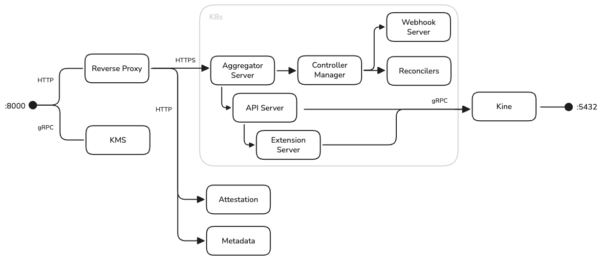

Make sovereign cloud boring.
One binary to run Kubernetes anywhere - Cluster API, Talos Linux, and hardware-rooted security, packaged so that compliant multi-cloud is as routine as any other deployment.
The humans behind the binary.
Two platform engineers who think sovereign infrastructure should be as boring as it is important.

Platform Engineer and Dad at day - endurance athlete at night. Building the next generation sovereign AI infrastructure for health care at Corti.ai, as well as running and biking the trails and tracks of Copenhagen.

You may find Nicklas in the depths of a Kubernetes cluster, messing with load balancers, gateways, ingress and BGP - or in between server racks. Passionate about bringing the programmability of cloud into more data centers using cloud-native technologies.
Regulated AI has nowhere to hide.
At Corti we build AI for regulated industries - healthcare being the prime example. Our infrastructure requirements are driven by regulation, not architecture astronautics.
Data sovereignty
Regulated data must stay in specific jurisdictions - patient records, financial data, citizen data. Some customers require fully on-premise deployments.
Compliance is law, not preference
GDPR, ISO 27001, SOC 2. Encryption at rest is legally required - GDPR fines reach 4% of global turnover.
Auditability
When regulators ask “who accessed what, when?” - we need answers, with evidence.
Operational sanity
A small platform team managing infrastructure across many environments - hyperscalers, virtualization, bare metal.
Sovereign cloud, minus the buzzwords.
Not “avoiding the cloud” - keeping control of your infrastructure, data, keys, and audit trail, independent of any single vendor.
For regulated industries, this is a compliance requirement - and building it is hard.
Data stays where you put it
Jurisdictional control - Amsterdam for Dutch customers, Paris for French, on-prem when required.
Your keys are your keys
You - not your cloud provider - control the master encryption keys. And can revoke them instantly.
Your machines are verifiable
Hardware-rooted trust, not “trust us, we’re the cloud”.
Your operations are portable
Move between providers without rewriting everything. Portability from day one is cheaper than migration later.
We evaluated the options honestly.
One binary. Nine moving parts.
Kubernetes API server
Combined kube-apiserver, extension API server, and aggregation layer via k8s.io/apiserver.
Cluster API controllers
Cluster, machine, and machine-deployment lifecycle - plus cluster-autoscaler integration.
Talos Linux providers
Bootstrap and control-plane providers generating immutable machine configuration.
Kine
etcd shim backed by PostgreSQL. No etcd to operate - state lives in a database you already know how to run.
KMS service
Networked LUKS2 key management with per-volume AES-256-GCM keys, bound to machine identity.
Attestation service
TPM 2.0 quote verification - machines prove boot integrity before receiving secrets.
Metadata service
Talos machine config delivery - gated by attestation. No trust, no config.
Talos proxy
HTTP CONNECT proxy tunneling gRPC into private-network workload clusters - end-to-end mTLS preserved.
Web UI
Kubeconfig retrieval, cluster overview, machine-deployment drill-down - the bits operators actually need.
One port. One executable. PostgreSQL for state.
The management plane: Kubernetes API server, Cluster API controllers, Talos providers, Kine, KMS, attestation & metadata services - in a single binary.

How do you fuse an API server, an aggregator, and an extension server into one binary?
Kommodity orchestrates the same building blocks upstream ships: the generic API server handles authn/authz, admission, and audit; the extension server serves CRDs; the aggregation layer is available for extension APIs - all wired to one listener, one TLS cert, one kubeconfig.
Security services (KMS, attestation, metadata) are in-process, so a machine’s first secret never leaves the binary that verified it. No etcd: Kine translates the watch/cache layer onto PostgreSQL.
aggregator.Listen() on :5000 - everything else is a library callNo quote, no secrets.
Machine identity in most clouds is “being on the right network”. Against compromised cloud credentials, that’s not trust - it’s hope. Kommodity requires hardware-rooted proof.
Boot
Machine boots Talos with the attestation extension installed.
Nonce
Node fetches a single-use, IP-bound cryptographic nonce from Kommodity.
TPM quote
TPM signs a quote over PCR values with the nonce as ExtraData - tamper-proof, hardware-bound.
Report
Quote plus software measurements (Secure Boot, SELinux, kernel lockdown, extensions…) POSTed to Kommodity.
Verify
ECDSA signature, PCR digest, and every measurement checked against per-cluster policy.
Encryption is meaningless if your cloud holds the keys.
Talos encrypts STATE and EPHEMERAL volumes with LUKS2. Keys live as Kubernetes Secrets in Kommodity’s own database - never on the machine, never with the provider.
First boot - Seal
Per-volume AES-256-GCM key generated on demand, encrypted with AAD = nodeUUID ‖ aadNonce ‖ clientIP
Every boot - Unseal
Key fetched over the network; KMS rejects requests whose peer IP doesn’t match the sealing IP.
Revocation - delete
kubectl delete secret <cluster>-kms-<node-uuid> → the machine can never decrypt its volumes again.
With security features enabled, machines cannot boot without network access to Kommodity. That is the design: revocation must be possible, so key retrieval must be deniable.
This makes Kommodity a critical dependency - plan for HA PostgreSQL, redundant replicas, and surviving network paths. The features are also optional: run Kommodity as a pure CAPI management plane when your compliance doesn’t mandate them.
Clusters as YAML, clouds as details.
A sovereign deployment in practice: Amsterdam on Azure, Paris on Scaleway, disaster recovery on KubeVirt in a private datacenter - three YAML files, one operational model.
# Deploy a cluster on Scaleway - one values file kommodity: provider: name: Scaleway # swap per provider secret: name: scaleway-secret region: fr-par controlplane: replicas: 3 sku: PLAY2-NANO nodepools: default: replicas: 2 sku: PLAY2-NANO
The controllers reconcile: cloud infrastructure → Talos machines → attestation → config delivery → control plane bootstrap → workers join.
Same workflow, any provider:
Providers differ - API versions, capabilities, networking. This is not “write once, run anywhere”. It’s “learn once, operate anywhere”: same kubectl, same Helm, same GitOps, same RBAC, same audit - on every cloud.
“Which node goes first?” - nobody.
Traditional Kubernetes bootstrap needs a designated first control-plane node. In automated environments that’s a sequencing problem. The auto-bootstrap extension removes the question.
Peer discovery
Each control-plane node scans the private-network CIDR for other Talos nodes.
Deterministic election
All nodes run the same algorithm: earliest boot time wins, lowest IP breaks ties. Same inputs, same answer - no coordination protocol.
Quorum wait
The winner waits until the configured number of peers are discovered (e.g. 3 for HA).
Bootstrap & join
Leader initializes etcd and the control plane; the rest detect the cluster and join automatically.
Peer discovery scans the CIDR without TLS verification - appropriate for isolated infrastructure networks, never for the public internet. Once peers are discovered, Talos’s certificate-based authentication takes over.
Apply a manifest, and three nodes coordinate into an HA control plane with zero manual steps. Extensions live at github.com/kommodity-io - autobootstrap and attestation for Talos, plus an OIDC discovery proxy and talos-cluster-proxy for the platform.
A single binary is not a single point of failure.
Let’s talk about what running Kommodity actually looks like - including the parts that aren’t free.
Existing clusters are independent
Once bootstrapped, workload clusters don’t depend on Kommodity. Your workloads keep running through a management-plane outage.
Critical only during changes
Provisioning, scaling, upgrades. Outside those operations, reconciliation is periodic - downtime is an inconvenience, not an incident.
Day two: addons & GitOps handoff
Cilium (eBPF CNI + Hubble) by default; any Helm chart is a first-class addon. upgrade.disable: true lets ArgoCD/Flux adopt releases without fights.
Audit logging built in
Standard Kubernetes audit policy format: user, source IP, timestamp, request bodies. CNPG instead of RDS, Strimzi instead of managed Kafka - sovereign replacements for managed services.
Not zero-ops - you’re still running infrastructure. Not a PaaS - what you run on the clusters is up to you. Not a silver bullet - you still need to understand each provider’s limits. One instance per environment type, multiple replicas behind a load balancer, HA PostgreSQL.
Sovereignty built in - not bolted on.
One binary. Kubernetes APIs. Verifiable machines. Encrypted disks. Boring - exactly what infrastructure should be.
Questions?
Come find us - let’s talk about what sovereign infrastructure should look like.
Apache 2.0 · built by Corti with love · contributions welcome